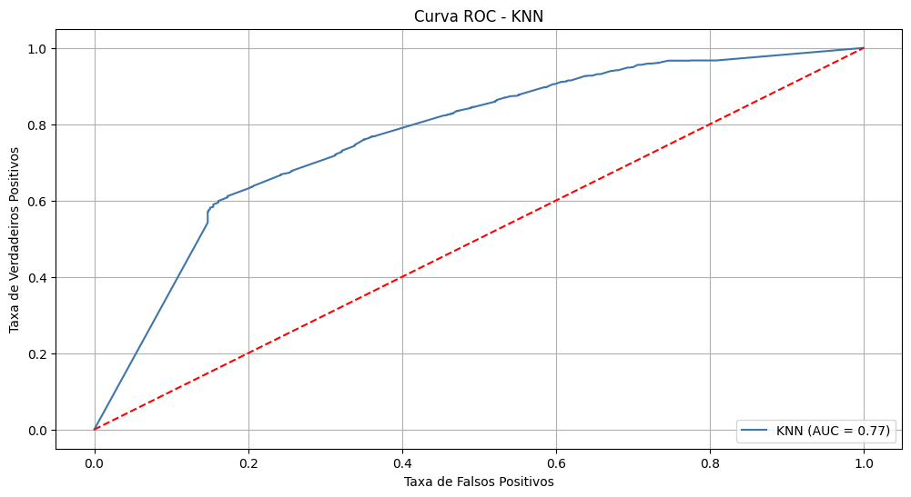
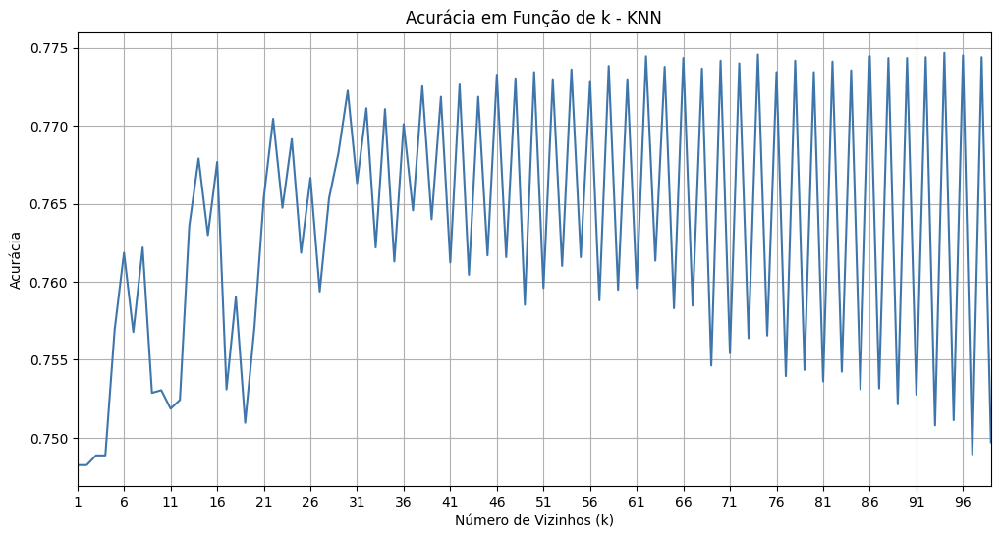
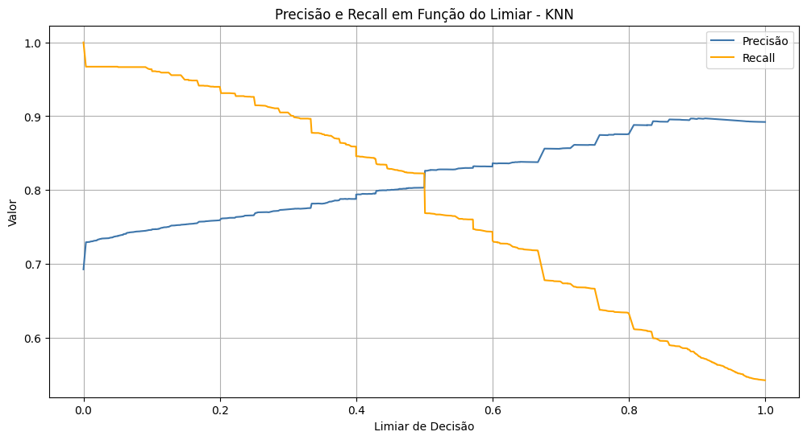
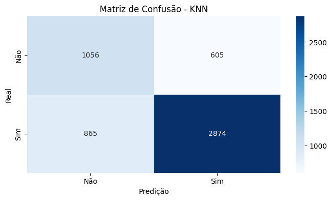
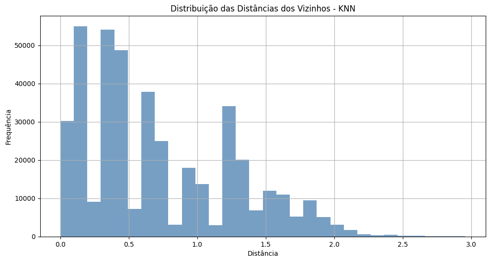

Este gráfico mostra a Curva ROC (Receiver Operating Characteristic) para o modelo KNN, permitindo avaliar a capacidade de separação entre as classes. A área sob a curva (AUC) é uma medida do desempenho do modelo.
A acurácia do modelo KNN é analisada em função do número de vizinhos (k). Este gráfico ilustra como a escolha do valor de k impacta na performance do modelo.
Este gráfico apresenta a relação entre precisão e recall conforme o limiar de decisão é alterado. É uma ferramenta importante para entender o trade-off entre precisão e sensibilidade do modelo.
A matriz de confusão fornece uma visão detalhada da performance do modelo KNN, mostrando o número de verdadeiros positivos, falsos positivos, verdadeiros negativos e falsos negativos. Essa informação é essencial para entender onde o modelo acerta e onde ele erra.
Este gráfico mostra a distribuição das distâncias dos vizinhos mais próximos utilizados pelo modelo KNN. Compreender como essas distâncias se distribuem pode ajudar a identificar como os dados estão agrupados e a influência dos vizinhos na classificação.
